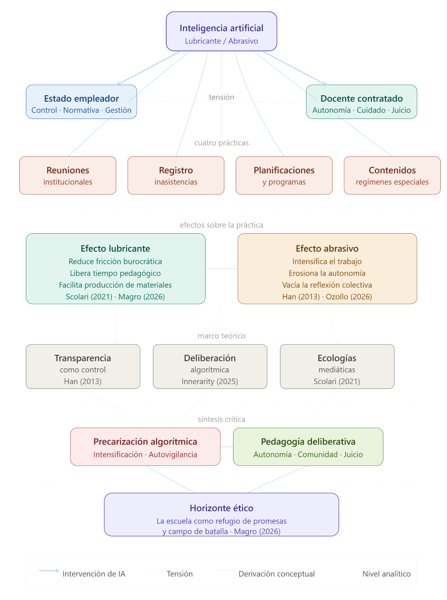

Transparencia como control
Byung-Chul Han permite pensar la documentación escolar como régimen de visibilidad: cuando todo debe quedar expuesto, la confianza se reemplaza por control.
Mapa de navegación
El artículo trabaja la tensión entre el alivio burocrático que promete la IA y el riesgo de precarización algorítmica cuando la eficiencia reemplaza la deliberación docente.
Presentación incrustada como PDF para que pueda verse dentro de la página. También queda disponible el archivo PPTX original.
Byung-Chul Han permite pensar la documentación escolar como régimen de visibilidad: cuando todo debe quedar expuesto, la confianza se reemplaza por control.
Innerarity ayuda a distinguir procedimiento automático y juicio colectivo: no todo lo eficiente es pedagógicamente justo.
Scolari permite ubicar la IA dentro de una red de interfaces, lenguajes y prácticas que transforman cómo se enseña y se aprende.
Magro habilita una lectura no tecnofóbica: la IA puede acompañar, pero no debe vaciar el vínculo pedagógico.
Ozollo permite leer la incorporación tecnológica como decisión política sobre tiempos, tareas, control y autonomía profesional.
Adell y Castañeda funcionan como brújula para no limitar la IA a una sustitución rápida de prácticas viejas.
Reproductor de audio integrado. No abre otra pestaña ni depende de servicios externos.

